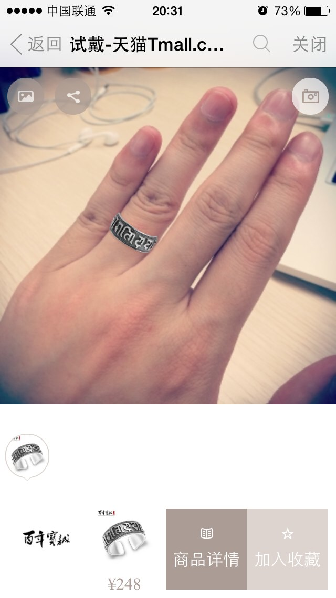
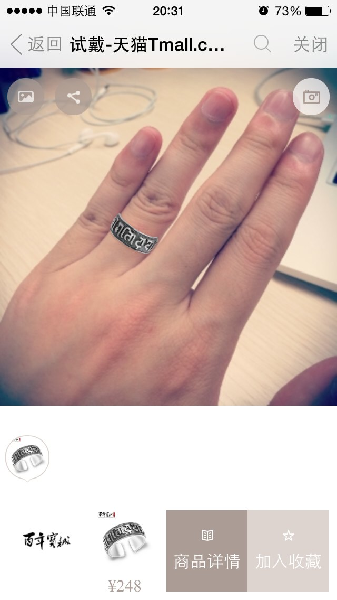

Hybrid API
天猫前端，圆空
历史
- 汇编语言
- 高级语言
- 游戏开发
- Hybrid API
Hybrid API 分类
- 动作
- 环境
- 音频
- 摄像头
动作类
- 陀螺仪
- 加速计
- 距离传感器
陀螺仪
陀螺仪
竖蛋
赛车
IOS桌面

加速计
摇一摇
天猫技术部年会


网球
距离传感器
环境相关
- GPS
- 磁力计
- 光线传感器
- 气压传感器
- 气温传感器
- 湿度传感器
GPS
指南针
智能感光
CSS light-level

其他
- 气压传感器 - 海拔
- 温度
- 湿度
音频
- 麦克风
- 扬声器
呐喊
声波支付
来源：支付宝
语言识别
来源：Siri
摄像头
- 拍照
- 视频
试戴

 

来源：天猫珠宝试戴
试戴的改进
实时图像识别
增强现实
增强现实
W3C Device API

联系我
LBBSTEEL@Gmail.com